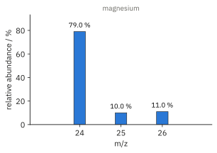
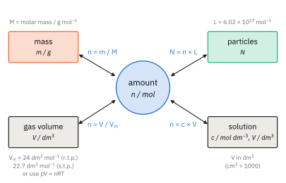
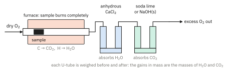

The Mole Concept and Stoichiometry 1
Topic 6 · The Mole Concept and Stoichiometry Part 1
On this page
Key terms
These are the terms the syllabus expects you to define and use. Every relative mass is measured against the same standard: one-twelfth of the mass of one atom of carbon-12.
| Term | Meaning |
|---|---|
| Relative isotopic mass | The mass of one atom of an isotope relative to one-twelfth of the mass of one atom of carbon-12. |
| Relative atomic mass, Ar | The weighted average mass of one atom of an element (taking into account its naturally occurring isotopes) relative to one-twelfth of the mass of one atom of carbon-12. |
| Relative molecular mass, Mr | The weighted average mass of one molecule of a substance relative to one-twelfth of the mass of one atom of carbon-12. |
| Relative formula mass, Mr | The same idea for an ionic compound, which has no molecules: the weighted average mass of one formula unit (e.g. NaCl, CaCO3) relative to one-twelfth of the mass of one atom of carbon-12. |
| Mole | The amount of substance that contains 6.02 × 1023 (the Avogadro constant) elementary entities: atoms, molecules, ions, electrons or formula units. |
| Avogadro constant, L | The number of entities in one mole: 6.02 × 1023 mol−1 (Data Booklet). |
| Molar mass, M | The mass of one mole of a substance, in g mol−1. Numerically equal to Ar or Mr. |
| Empirical formula | The simplest whole-number ratio of the atoms of each element in a compound. |
| Molecular formula | The actual number of atoms of each element in one molecule of the compound. |
Relative masses
Atoms are far too light to weigh one at a time. One atom of carbon-12 has a mass of about 1.99 × 10−23 g. So instead of using actual masses, chemists compare every atom with one standard atom, carbon-12, whose mass is defined as exactly 12 units. On this scale, an atom of 1H is about 1 and an atom of 16O is about 16.1
The relative masses are ratios, so they have no units. Once we know Ar for each element, Mr is just the sum of the Ar values of all the atoms in the formula:
Mr(H2O) = 2(1.0) + 16.0 = 18.0
Mr(CaCO3) = 40.1 + 12.0 + 3(16.0) = 100.1
Mr(CuSO4·5H2O) = 63.5 + 32.1 + 4(16.0) + 5(18.0) = 249.6
(For a hydrated salt, the water of crystallisation is part of the formula unit, so it is included in Mr.)
For CaCO3 and CuSO4·5H2O, which are ionic, the correct name is relative formula mass: there is no such thing as a ‘molecule’ of calcium carbonate, only a lattice of Ca2+ and CO32− ions. The symbol Mr is used for both. All Ar values in these notes are from the Data Booklet.
Relative atomic mass from isotopic abundances
Most elements exist as a mixture of isotopes (Topic 1 Part 1). The relative atomic mass is the weighted average of their relative isotopic masses, each weighted by its abundance:
Ar = Σ(abundance × relative isotopic mass) / Σ(abundance)
If the abundances are percentages, the bottom line is simply 100. If they are given as relative peak heights from a mass spectrum, divide by the total of the heights.
Worked example 1: chlorine
Naturally occurring chlorine is 75.8 % 35Cl and 24.2 % 37Cl. Calculate the relative atomic mass of chlorine.
So Ar(Cl) = 35.5 (3 s.f.). This is why the Periodic Table gives chlorine as 35.5, even though no single chlorine atom has a mass of 35.5. The answer is closer to 35 than to 37 because 35Cl is about three times as common.
Worked example 2: magnesium from a mass spectrum
A mass spectrum shows one peak for each isotope; the height of each peak is proportional to the abundance of that isotope.2 The mass spectrum of magnesium is shown in Fig 1.

Worked example 3: working backwards
Copper has two isotopes, of relative isotopic masses 62.9 and 64.9. Its relative atomic mass is 63.5. Calculate the percentage abundance of the lighter isotope.
(To answer this, let the fraction of the lighter isotope be x. The fraction of the heavier one must then be (1 − x), because the two fractions add up to 1.)
63.5 = 62.9x + 64.9(1 − x)
63.5 = 64.9 − 2.0x
x = (64.9 − 63.5) / 2.0 = 0.700
So the lighter isotope, 63Cu, makes up 70.0 %. (The accepted value is 69.2 %. The difference comes from rounding the masses to one decimal place and Ar to 63.5.)
Bromine is a useful test case. With 50.7 % 79Br and 49.3 % 81Br, and isotopic masses of 78.9 and 80.9, Ar = 79.9, as in the Data Booklet. With whole-number masses of 79 and 81 you would get 80.0.3
The mole and the Avogadro constant
A mole is just a number, like a dozen. A dozen eggs is 12 eggs; a mole of atoms is 6.02 × 1023 atoms. The number is enormous because atoms are so small.
Always say what the entities are. One mole of oxygen atoms (O) has a mass of 16.0 g; one mole of oxygen molecules (O2) contains 2 mol of atoms and has a mass of 32.0 g. One mole of NaCl contains 1 mol of Na+ ions and 1 mol of Cl− ions.
The scale of relative masses was chosen so that the molar mass, M, in g mol−1 is numerically equal to Ar or Mr. So M(H2O) = 18.0 g mol−1, and 18.0 g of water contains 6.02 × 1023 molecules. The two working equations are
N = n × L
where n is the amount in moles, m the mass in g, M the molar mass in g mol−1 and N the number of particles.
Worked example 4
For 4.40 g of carbon dioxide, calculate (a) the amount in moles, (b) the number of molecules and (c) the number of atoms.
(a) Mr(CO2) = 12.0 + 2(16.0) = 44.0, so n = 4.40 / 44.0 = 0.100 mol
(b) N = 0.100 × 6.02 × 1023 = 6.02 × 1022 molecules
(c) Each CO2 molecule has 3 atoms, so the number of atoms = 3 × 6.02 × 1022 = 1.81 × 1023 atoms
Worked example 5
(a) Calculate the mass of one atom of carbon-12. (b) How many ions are there in 5.85 g of sodium chloride?
(a) One mole of 12C atoms has a mass of 12.0 g, so one atom has a mass of 12.0 / (6.02 × 1023) = 1.99 × 10−23 g.
(b) n(NaCl) = 5.85 / 58.5 = 0.100 mol. Each formula unit gives two ions (Na+ and Cl−), so n(ions) = 0.200 mol and the number of ions = 0.200 × 6.02 × 1023 = 1.20 × 1023.
The mole map
Almost every calculation in this topic goes through the amount in moles. Whatever you are given (a mass, a gas volume, or a volume and concentration of a solution), convert it into moles first; whatever you are asked for, convert from moles at the end. Fig 2 shows the four routes in and out.

The gas and solution routes are used in Part 2. For gases, Vm is the molar volume: 24 dm3 mol−1 at r.t.p. (101 325 Pa, 293 K) and 22.7 dm3 mol−1 at s.t.p. (105 Pa, 273 K), both from the Data Booklet. Under any other conditions, use pV = nRT (Topic 3 Part 1).
Empirical and molecular formulae
The empirical formula is the simplest whole-number ratio of the atoms of each element in a compound. The molecular formula is the actual number of atoms of each element in one molecule. The molecular formula is always a whole-number multiple of the empirical formula.
| Compound | Molecular formula | Empirical formula |
|---|---|---|
| ethane | C2H6 | CH3 |
| ethanoic acid | C2H4O2 | CH2O |
| glucose | C6H12O6 | CH2O |
| benzene | C6H6 | CH |
| ethanol | C2H6O | C2H6O (already the simplest ratio) |
| sodium chloride | none: ionic | NaCl |
Ethanoic acid and glucose have the same empirical formula, so the empirical formula alone cannot tell them apart. To get the molecular formula you also need Mr. Ionic compounds and giant structures (SiO2, diamond) have no molecules, so they only have an empirical formula.
The method
- Write down the mass (or percentage) of each element. If one element is not given, find it by difference.
- Divide each by its Ar to get the amount in moles.
- Divide every amount by the smallest one.
- If the ratios are not close to whole numbers, multiply them all by the same small number (see the box below).
- Write the empirical formula. Then find n = Mr / (empirical formula mass); the molecular formula is n × the empirical formula.
Worked example 6: from composition by mass
A compound contains 40.0 % carbon, 6.7 % hydrogen and 53.3 % oxygen by mass. Its Mr is 60. Find (a) its empirical formula and (b) its molecular formula.
(Take 100 g of the compound, so the percentages become masses in grams.)
| C | H | O | |
|---|---|---|---|
| mass / g | 40.0 | 6.7 | 53.3 |
| ÷ Ar | 40.0 / 12.0 = 3.33 | 6.7 / 1.0 = 6.7 | 53.3 / 16.0 = 3.33 |
| ÷ smallest (3.33) | 1.00 | 2.01 | 1.00 |
| whole-number ratio | 1 | 2 | 1 |
(a) Empirical formula = CH2O
(b) Empirical formula mass = 12.0 + 2(1.0) + 16.0 = 30.0, and n = 60 / 30.0 = 2. Molecular formula = (CH2O)2 = C2H4O2 (ethanoic acid).
From combustion data
An organic compound containing C, H and perhaps O is burned completely in excess oxygen. All its carbon ends up in CO2 and all its hydrogen in H2O. The water is absorbed first, by anhydrous calcium chloride, and then the carbon dioxide, by soda lime (Fig 3).4 The gains in mass of the two absorbers give the masses of H2O and CO2 formed.

From those masses:
mass of C = mass of CO2 × (12.0 / 44.0)
mass of H = mass of H2O × (2.0 / 18.0)
Oxygen cannot be found this way, because the oxygen in the products came partly from the O2 supply. It is found by difference: mass of O = mass of sample − mass of C − mass of H.
Worked example 7: from combustion data
0.230 g of a compound containing carbon, hydrogen and oxygen only was burned completely in excess oxygen. 0.440 g of CO2 and 0.270 g of H2O were formed. The compound is a gas at room temperature; in a separate experiment, 0.230 g of it occupied 120 cm3 at r.t.p. Find the molecular formula of the compound and suggest its identity.
(First find the mass of each element, then proceed exactly as before.)
mass of C = 0.440 × (12.0 / 44.0) = 0.120 g
mass of H = 0.270 × (2.0 / 18.0) = 0.0300 g
mass of O = 0.230 − 0.120 − 0.0300 = 0.0800 g
| C | H | O | |
|---|---|---|---|
| mass / g | 0.120 | 0.0300 | 0.0800 |
| ÷ Ar / mol | 0.0100 | 0.0300 | 0.00500 |
| ÷ smallest (0.00500) | 2 | 6 | 1 |
Empirical formula = C2H6O, empirical formula mass = 46.0.
(Now use the gas volume to find Mr. At r.t.p., one mole of any gas occupies 24 dm3.)
n = 0.120 dm3 / 24 dm3 mol−1 = 0.00500 mol
M = 0.230 g / 0.00500 mol = 46.0 g mol−1
Since Mr = empirical formula mass, the molecular formula is C2H6O. Two compounds have this formula: ethanol, CH3CH2OH, and methoxymethane, CH3OCH3. Ethanol is a liquid at room temperature (it is hydrogen-bonded), so this gas must be methoxymethane (b.p. −24 °C).
Worked example 8: water of crystallisation
2.50 g of hydrated copper(II) sulfate, CuSO4·xH2O, was heated to constant mass.5 1.60 g of anhydrous CuSO4 remained. Find x.
mass of water lost = 2.50 − 1.60 = 0.90 g
n(H2O) = 0.90 / 18.0 = 0.0500 mol
n(CuSO4) = 1.60 / 159.6 = 0.01003 mol
x = 0.0500 / 0.01003 = 4.99, so x = 5
The formula is CuSO4·5H2O. Treat the water exactly like an ‘element’ in the formula: you are finding the mole ratio of CuSO4 to H2O.
Percentage composition
The reverse calculation is quicker. The percentage by mass of an element in a compound is
% by mass = [(number of atoms of the element × Ar) / Mr of the compound] × 100
For example, the percentage of nitrogen in ammonium nitrate, NH4NO3 (Mr = 80.0), is 2(14.0) / 80.0 × 100 = 35.0 %.
Additional information
- Carbon-12 is used as the standard because it is easy to handle and to measure accurately in a mass spectrometer. ↩
- How a mass spectrometer works is not required in 9476. For singly charged ions, each peak appears at m/z equal to the relative isotopic mass, and its height is proportional to the abundance of that isotope. Topic 1 Part 1 has the isotopes of hydrogen, carbon, chlorine and bromine. ↩
- Beyond the syllabus: relative isotopic masses are not exactly whole numbers. 35Cl is 34.969 and 37Cl is 36.966, because of the mass defect (see the Topic 1 worked solutions). Whole numbers are fine for chlorine, but for bromine they put Ar out by 0.1. ↩
- The order matters. Soda lime absorbs water as well as carbon dioxide, so the water must be removed first. In practice the hot tube also contains copper(II) oxide, which oxidises any CO to CO2. ↩
- Heating to constant mass: heat, cool in a desiccator, weigh, and repeat until two successive masses agree. Only then can you be sure all the water has gone. ↩